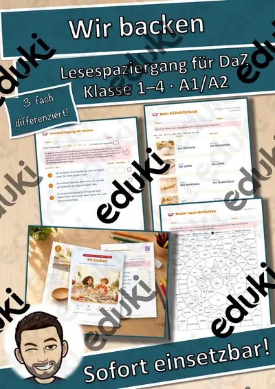
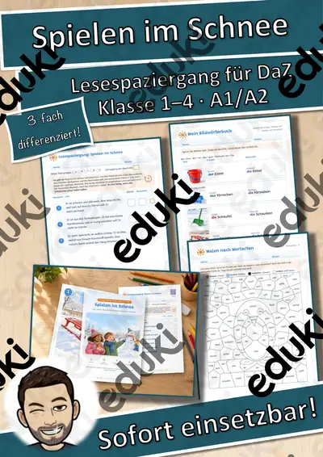
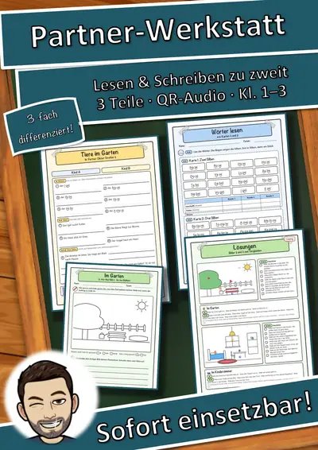

Lesespaziergang DaZ: Wir backen – Wortschatz mit Rätseln, 3-fach differenziert (Klasse 1–4)

Lesespaziergang DaZ: Spielen im Schnee – Wortschatz mit Rätseln, 3-fach differenziert (Klasse 1–4)

Lesespaziergang DaZ: Gemüse – Wortschatz mit Rätseln, 3-fach differenziert (Klasse 1–4)

Lesespaziergang DaZ: Sankt Martin – Wortschatz mit Rätseln, 3-fach differenziert (Klasse 1–4)

Lesespaziergang DaZ: Im Klassenzimmer – Wortschatz mit Rätseln, 3-fach differenziert (Klasse 1–4)

Rafael Nadal Lückentext mit Wortspeicher Hörverstehen und Suchsel

Odin Lückentext mit Wortspeicher Hörverstehen und Suchsel

Albrecht Dürer Lückentext mit Wortspeicher Hörverstehen und Suchsel

Aberglaube Lückentext mit Wortspeicher Hörverstehen und Suchsel

Abendmahl Lückentext mit Wortspeicher Hörverstehen und Suchsel

Aachen Lückentext mit Wortspeicher Hörverstehen und Suchsel

DaZ & Leseförderung Materialpaket: Partner-Werkstatt – Partnerdiktat, Hör-Mal-Bilder, Lese-Fitness-Pass (3 Niveaus, QR-Audio)

DaZ & Leseförderung: Lese-Fitness-Pass – Silben, Wörter, Sätze flüssig lesen (Lesetandem, QR-Audio)

DaZ & Leseförderung: Hör-Mal-Bilder – Zuhören, Lagewörter verstehen, malen (3 Niveaus, QR-Audio)

DaZ & Leseförderung: Partner-Diktat-Streifen – 6 Wortfelder, 3 Niveaus, Hör-Diktat per QR-Code

Materialpaket Hymnen

Europahymne

Deutsche Nationalhymne

Bayernhymne

Materialpaket: Steckbriefe der Bundesministerinnen und Bundesminister Bundesregierung, Minister

Bundesministerin für Wohnen, Stadtentwicklung und Bauwesen - Verena Hubertz

Bundesministerin für Forschung, Technologie und Raumfahrt - Dorothee Bär

Bundesministerin für Bildung, Familie, Senioren, Frauen und Jugend - Karin Prien

Bundesministerin der Justiz und für Verbraucherschutz - Stefanie Hubig

Bundesminister für Umwelt, Naturschutz und nukleare Sicherheit - Carsten Schneider

Bundesminister für Ernährung, Landwirtschaft und Heimat - Alois Rainer

Bundesminister für Digitalisierung und Staatsmodernisierung - Karsten Wildberger

Bundesminister des Innern - Alexander Dobrindt

Bundesminister des Auswärtigen - Johann Wadephul

Bundesminister der Verteidigung - Boris Pistorius
Keine Materialien gefunden – versuch einen anderen Suchbegriff oder Filter.
Sprache lernen mit klaren Texten
Wer Deutsch als Zweitsprache lernt, braucht kurze Sätze, Bilder und Wiederholung. Die Materialien dieser Seite sind darauf ausgelegt: einfacher Wortschatz, Bildkarten zum Mitlesen und Hörfassungen, die das Mitsprechen unterstützen.
Klasse 1 bis 4: Lesespaziergang DaZ
Die Reihe „Lesespaziergang DaZ“ behandelt Alltagsthemen: „Wir backen“, „Spielen im Schnee“, „Gemüse“, „Sankt Martin“ und „Im Klassenzimmer“. Die Kinder gehen durch den Raum, lesen Bildkarten und sammeln Lösungswörter, was Sprechen, Lesen und Bewegen verbindet.
Klasse 5 bis 7: Lückentexte mit Hörverstehen
Mit „Rafael Nadal“, „Albrecht Dürer“, „Odin“, „Abendmahl“ und „Aberglaube“ stehen Themen aus Kultur und Allgemeinwissen bereit, jeweils als Lückentext mit Wortspeicher, Hörverstehen und Suchsel. Das hilft, Wortschatz im Zusammenhang aufzubauen.
Klasse 8 bis 10: Land und Gesellschaft
Für ältere Lernende gibt es das „Materialpaket Hymnen“ mit „Deutsche Nationalhymne“, „Europahymne“ und „Bayernhymne“ sowie das „Materialpaket: Steckbriefe der Bundesministerinnen und Bundesminister“. Beides führt in Kultur und politisches System ein.
Wie sich das Material einsetzen lässt
In Vorbereitungsklassen, Sprachfördergruppen und im Regelunterricht mit Zweitsprachlernenden. Die Lösungen liegen bei, die Texte sind so formuliert, dass sie auch ohne Lehrkraft verstanden werden können.
Hinweise zur Gestaltung
Die Seiten sind bewusst übersichtlich gestaltet, mit großer Schrift und wenig Ablenkung. Neue Wörter stehen im Wortspeicher, Bilder stützen das Verstehen. Wer mit sehr jungen Lernenden arbeitet, kann die Lesespaziergänge in Partnerarbeit durchführen und die Sätze laut lesen lassen.
Wortschatz sichern
Wortschatz bleibt hängen, wenn er mehrfach in neuen Zusammenhängen auftaucht. Wer einen Lesespaziergang liest, hört und später als Lückentext bearbeitet, begegnet den Wörtern in drei Formen. Das erhöht die Chance, dass sie wirklich im Gedächtnis bleiben.
Für Lehrkräfte, die neu in der Sprachförderung sind, ist das ein praktischer Weg, Material ohne lange Vorbereitung bereitzustellen und trotzdem verschiedene Sinne anzusprechen: Sehen, Hören, Sprechen und Bewegen.
Häufige Fragen
Für welche Altersgruppe ist DaZ-Material vorhanden?
Für Klasse 1 bis 10. Die Grundschule arbeitet mit Lesespaziergängen, die Sekundarstufe mit Lückentexten.
Gibt es Übersetzungen?
Das Material ist auf Deutsch. Für andere Sprachen gibt es separate Sprachbereiche der Seite.
Eignen sich die Materialien für Erwachsene?
Teilweise, etwa die Texte zu Politik und Kultur. Sie sind für Jugendliche geschrieben.
Wie wird das Hörverstehen unterstützt?
Über QR-Codes, die die Texte als Audio wiedergeben.